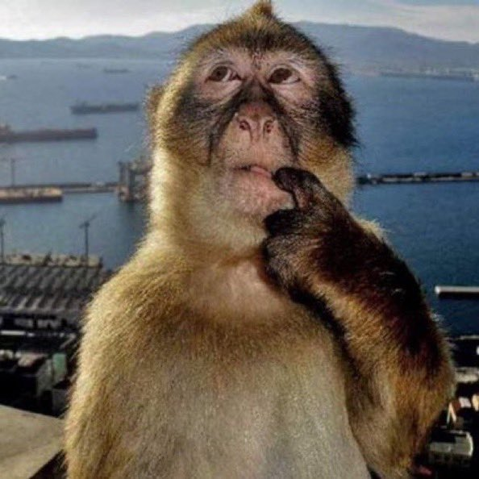

Integrantes
PRECURSORES DE LA CALIDAD
Su visión sigue presente en cada mejora
Línea de tiempo

1920
Shewhart
1950
Deming
1950-60
Juran
1951
Feigenbaum
1955
Taguchi
1960
Ishikawa
1960-70
Mizuno
1970
Akao
1974
Pirsig
1979
Crosby
1980
Shingo
1986
Imai
1990
Senge
Actualidad
Mejora Continua